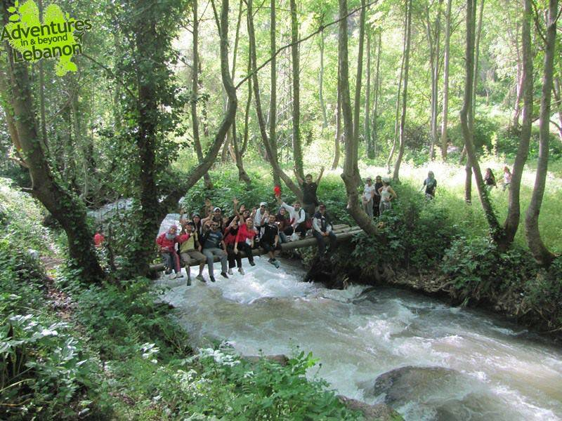
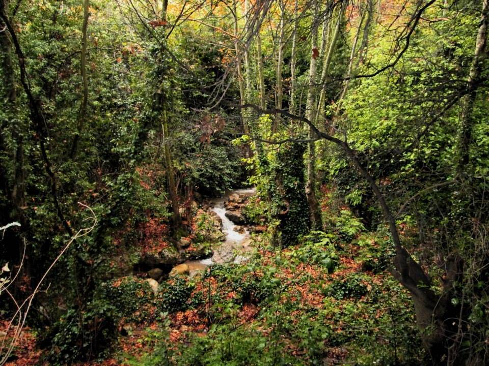
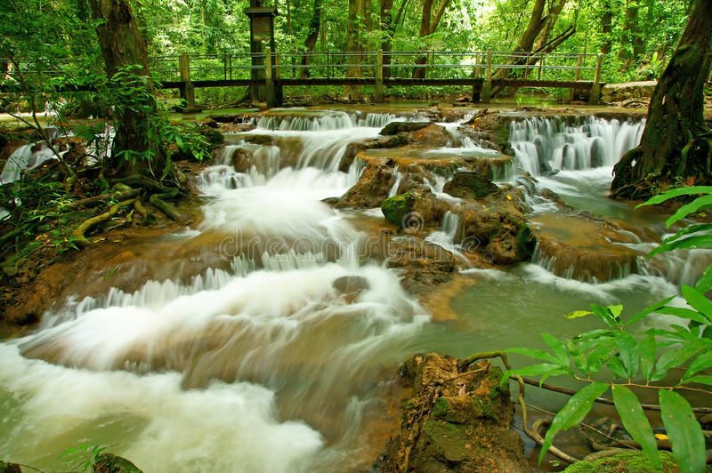
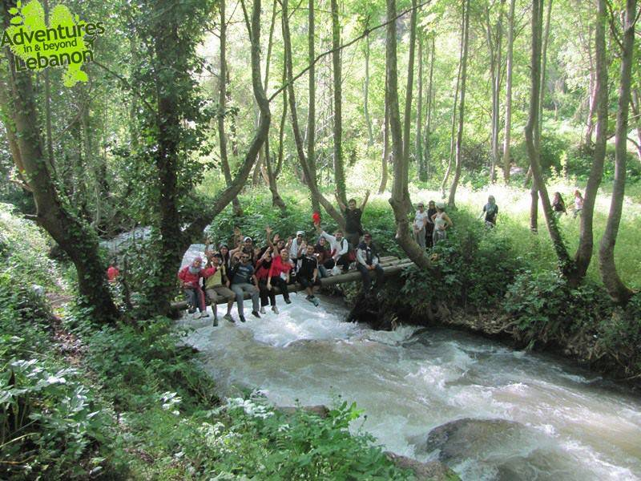
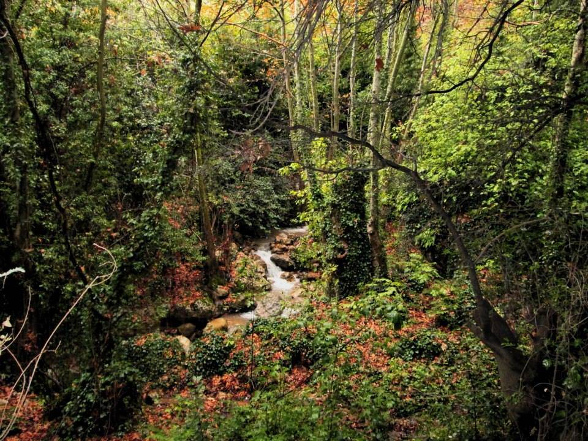
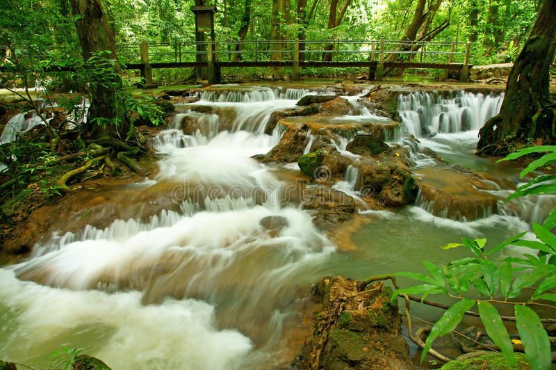

|
 |
|---|---|
|  |
 |
| |
 |
|---|---|
|  |
 |
This video is a small place in Wadi Qannoubin:
Founded in 375, it is the oldest of the Maronite monasteries and the first center of eremitic life in Lebanon.
From 1440 to 1830 it was the See of Maronite Patriarch.
As all the monasteries in Qadisha Valley it is partially cut into a rock.
The Qadisha Valley site and the Forest of the Cedars of God (Horsh Arz el-Rab) are located in northern Lebanon.
The Qadisha Valley is located North of Mount-Lebanon chain, at the foot of Mount al-Makmel and West of the Forest of the Cedars of God.